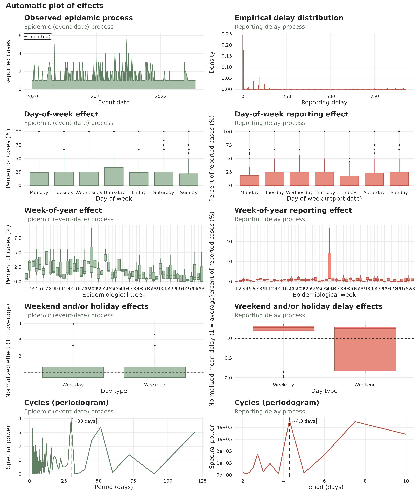
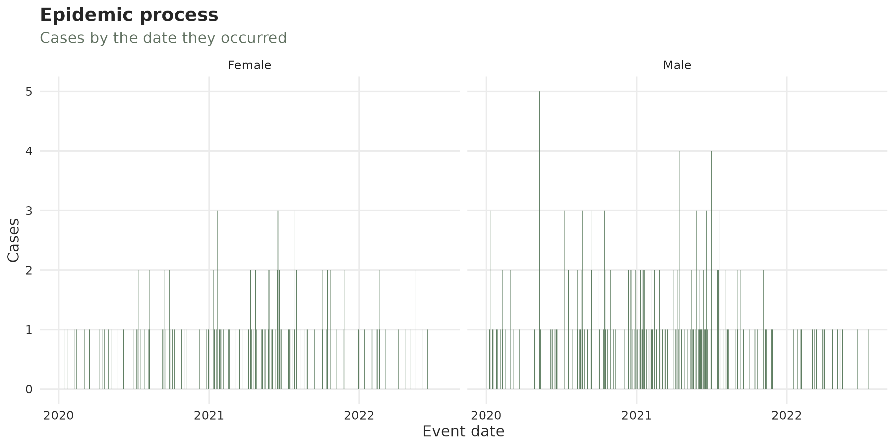
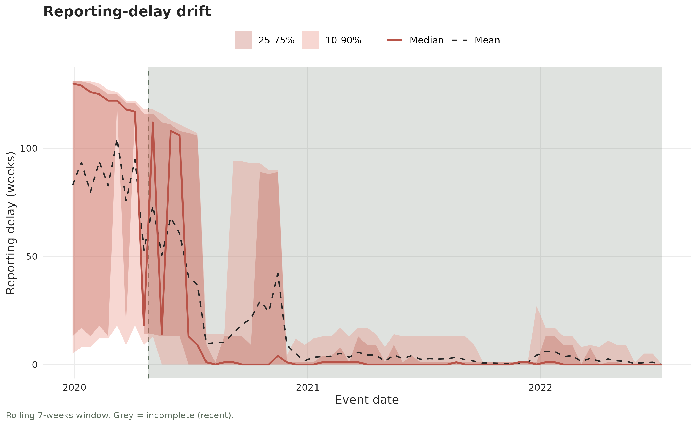

A complete nowcasting workflow: hospital-acquired infections in Bucaramanga
example.RmdThis article is an end-to-end walk-through of the
tbl.now workflow on a real, deliberately
unpolished dataset. We will:
-
Build a
tbl_nowfrom a messy surveillance extract — before cleaning it — and letdiagnose()report what is wrong, rather than guessing. - Clean what it reported: duplicate records, missing dates, and reports that arrive before the event they describe. Then re-run the diagnosis to confirm the fix rather than assume it.
-
Look at the data with
autoplot(), read the numbers off it withsummary(), and use the standaloneplot_*()diagnostics. - Ask whether the reporting delay is stable — does it drift, does it jump?
- Attach temporal effects that the data actually justifies.
-
Nowcast, first with
diseasenowcastingand then with five other engines, letting everything we found in steps 1–4 inform the model.
The thread running through all of it: look before you model. Every modelling choice at the end is traceable to something we measured at the beginning.
The data
hai_bucaramanga is a line list of
healthcare-associated infections (IAAS, Infecciones
Asociadas a la Atención en Salud) notified in the municipality of
Bucaramanga, Colombia, published on the Colombian open-data portal. Each
row is one infection: a specimen taken from a hospitalised patient, the
laboratory result, and the microorganism isolated.
data(hai_bucaramanga)
glimpse(hai_bucaramanga)
#> Rows: 1,423
#> Columns: 13
#> $ id <int> 1, 2, 3, 4, 5, 6, 7, 8, 9, 10, 11, 12, 13, 14, 15, 16, 17, 18, 19, 20, 21, 22, 23, 24, 25, 26, 27, 28, 29, 30, 31, 32, 33, 34, 35, 162…
#> $ specimen_date <date> 2018-10-01, 2018-11-01, 2018-01-27, 2018-01-27, 2018-04-20, 2018-01-22, 2018-01-02, 2018-06-28, 2018-11-03, 2018-12-02, 2016-01-22, 2…
#> $ received_date <date> 2018-10-01, 2018-11-01, 2018-01-27, 2018-01-27, 2018-04-20, 2018-01-22, 2018-01-02, 2018-06-28, 2018-03-13, 2018-12-02, NA, NA, 2018-…
#> $ report_date <date> 2018-01-13, NA, 2018-01-31, 2018-01-30, 2018-04-26, 2018-01-25, 2018-03-02, 2018-06-30, 2018-03-13, NA, NA, NA, 2018-12-03, 2018-08-0…
#> $ specimen <fct> Whole blood, Whole blood, Whole blood, Whole blood, Urine, Whole blood, Whole blood, Whole blood, Whole blood, Whole blood, Whole bloo…
#> $ test <fct> Blood culture, Blood culture, Blood culture, Blood culture, Urine culture, Blood culture, Blood culture, Blood culture, Blood culture,…
#> $ microorganism <chr> "Burkholderia cepacia", "Klebsiella pneumoniae", "Stenotrophomonas maltophilia", "Klebsiella pneumoniae", "Klebsiella pneumoniae", "Kl…
#> $ sex <fct> Female, Male, Female, Male, Male, Male, Female, Male, Male, Male, Male, Male, Female, Female, Female, Male, Male, Male, Male, Male, Fe…
#> $ age_group <ord> 20-29, 50-59, 50-59, 50-59, 70+, 30-39, 20-29, 50-59, 50-59, 70+, <1, 5-9, 60-69, 40-49, 30-39, 60-69, 10-14, 70+, <1, 1-4, 50-59, 20-…
#> $ case_type <fct> Laboratory-confirmed, Laboratory-confirmed, Laboratory-confirmed, Laboratory-confirmed, Laboratory-confirmed, Laboratory-confirmed, La…
#> $ final_condition <fct> Alive, Alive, Alive, Alive, Dead, Alive, Alive, Dead, Alive, Alive, NA, NA, Alive, Alive, Alive, Alive, NA, Alive, Alive, NA, Alive, A…
#> $ icu_type <fct> Adult, Adult, Adult, Adult, Adult, Adult, Adult, Adult, Adult, Adult, Paediatric, Paediatric, Adult, Adult, Adult, Adult, Paediatric, …
#> $ institution <int> 5, 4, 5, 5, 4, 5, 5, 5, 2, 4, 1, 1, 5, 2, 5, 2, 5, 6, 1, 1, 5, 2, 2, 1, 6, 6, 1, 1, 5, 5, 1, 1, 7, 6, 5, 1, 1, 1, 1, 1, 1, 8, 8, 7, 5,…For nowcasting, two columns matter:
-
specimen_date— the event date, when the sample was taken. -
report_date— the report date, when the laboratory issued the result.
The delay between them is the specimen-to-result turnaround, and it
is exactly what a nowcast has to model. (received_date
would split that into a transport and a processing leg, but it is 84%
missing and stops in 2019, so we leave it alone.)
1. Choosing a time resolution
Before anything else, the data has to be put on a time grid, because the grid constrains everything after it — including which nowcasting engines you can use at all.
A tbl_now will happily take the daily dates, but daily
is not usable here. Counting needs rows that have both dates, so this
one filter runs ahead of the cleaning proper:
hai_bucaramanga |>
filter(!is.na(specimen_date), !is.na(report_date)) |>
summarise(
cases = n(),
distinct_days = n_distinct(specimen_date),
cases_per_day = round(n() / n_distinct(specimen_date), 2),
distinct_weeks = n_distinct(floor_date(specimen_date, "week", week_start = 1)),
cases_per_week = round(n() / n_distinct(floor_date(specimen_date, "week", week_start = 1)), 2)
)
#> # A tibble: 1 × 5
#> cases distinct_days cases_per_day distinct_weeks cases_per_week
#> <int> <int> <dbl> <int> <dbl>
#> 1 826 539 1.53 234 3.53Roughly 1.5 cases per day cannot support a delay distribution with any resolution at all. Aggregating to weeks gives about three and a half cases a week, which is still thin but workable.
Monthly would be denser still, and statistically it is the better fit
for this data — but it is worth knowing that your time unit
constrains your choice of engine. Of the five nowcasting
packages used at the end of this article, only
diseasenowcasting and baselinenowcast accept
monthly data: NobBS supports only daily and weekly units,
and epinowcast accepts only "day" and
"week" timesteps. Weeks are the finest unit every engine
agrees on, so weeks it is.
hai_weekly_raw <- hai_bucaramanga |>
mutate(
event_week = floor_date(specimen_date, "week", week_start = 1),
report_week = floor_date(report_date, "week", week_start = 1)
)2. Building the tbl_now
Now the data can be handed to tbl_now(). We declare the
two dates, say the data is a line list (one row per case), and stratify
by the type of intensive care unit.
This is deliberately done before cleaning.
?hai_bucaramanga documents the defects, but rather than
trusting the help page — or discovering them one at a time — we let the
object tell us what is wrong with it. tbl_now() accepts
imperfect data and complains about it:
hai_raw_now <- hai_weekly_raw |>
tbl_now(
event_date = event_week,
report_date = report_week,
strata = icu_type,
data_type = "linelist"
)
#> Warning: 318 rows have NA values in the event_date column "event_week".
#> ℹ A row with no event date cannot be placed on the reporting triangle.
#> Warning: 583 rows have NA values in the report_date column "report_week".
#> ℹ A row with no report date cannot be placed on the reporting triangle.
#> Warning: 88 rows have a `report_date` before `event_date`
#> ℹ A negative reporting delay is not a delay; the two date columns may be swapped, or the rows may be data-entry errors.Three warnings, before we have looked at a single number.
tbl_now() also inferred that both dates are
weekly, computed .delay and the numeric
indices, and set the now to the most recent report
week. From here on, everything — the plots, the diagnostics, and every
model converter — reads those settings off the object instead of being
told again.
3. What is wrong with it?
The warnings above are the loud findings. diagnose()
returns all of them, and the quiet ones too, as a tibble sorted worst
first. status is an ordered factor — error
> warning > note > ok
> not_run > skipped — so filtering to
what needs acting on is a comparison:
diagnose(hai_raw_now) |>
filter(status <= "note") |>
select(check, scope, stratum, status, n_affected, n_total, message)
#> # A tibble: 14 × 7
#> check scope stratum status n_affected n_total message
#> <chr> <chr> <chr> <ord> <dbl> <dbl> <chr>
#> 1 missing event_week all warning 318 1423 "318 rows have NA values in the event_date column \"event_week\"."
#> 2 missing report_week all warning 583 1423 "583 rows have NA values in the report_date column \"report_week\"."
#> 3 ordering event_to_report all warning 88 1423 "88 rows have a `report_date` before `event_date`"
#> 4 declarations undeclared all note 12 18 "12 columns \"id\", \"specimen_date\", \"received_date\", \"report_date\", \"specimen\", …
#> 5 now now_gap_event Neonatal note 40 NA "The last event date is 40 weeks before now (\"2023-10-30\")."
#> 6 now now_gap_report Adult note 39 NA "The last report date is 39 weeks before now (\"2023-10-30\")."
#> 7 now now_gap_report Neonatal note 40 NA "The last report date is 40 weeks before now (\"2023-10-30\")."
#> 8 now now_gap_report Paediatric note 42 NA "The last report date is 42 weeks before now (\"2023-10-30\")."
#> 9 now now_gap_report all note 39 NA "The last report date is 39 weeks before now (\"2023-10-30\")."
#> 10 strata size Neonatal note 157 1423 "The smallest stratum is \"Neonatal\" with 157 cases, 11% of the total."
#> 11 strata sparsity Neonatal note 337 410 "The sparsest stratum is \"Neonatal\": 82.2% of the event dates on the grid carry no case…
#> 12 truncation event_date Adult note 2 210 "2 event dates are younger than the 95th percentile of the delay, so their counts are sti…
#> 13 truncation event_date Paediatric note 1 75 "1 event date is younger than the 95th percentile of the delay, so its counts are still f…
#> 14 truncation event_date all note 2 234 "2 event dates are younger than the 95th percentile of the delay, so their counts are sti…That is the cleaning list, derived rather than assumed. Three of the
findings are defects to fix — missing event dates, missing report dates,
and reports that precede their event. The others are things the file
cannot be blamed for but you still need to know: twelve columns were
never declared, so they silently split every reporting-triangle cell;
and the last event date sits well behind now, because
reporting on this extract stopped before the extract did.
Two statuses deserve attention, because neither means “fine”:
diagnose(hai_raw_now) |>
filter(status == "skipped") |>
select(check, scope, message)
#> # A tibble: 6 × 3
#> check scope message
#> <chr> <chr> <chr>
#> 1 duplicates key A line list is one row per case, so identical rows are two cases rather than a repeat.
#> 2 negatives count A line list has no count column to go negative.
#> 3 ordering event_to_confirmation The object carries no confirmation process.
#> 4 ordering report_to_confirmation The object carries no confirmation process.
#> 5 signposts confirmation The object carries no confirmation process.
#> 6 strata pending The object carries no confirmation process.skipped is not ok. ok means a
check ran and found nothing; skipped means it could not run
at all, and a check that cannot be performed is never reported as a
pass. Note the first row in particular: diagnose()
will not look for duplicate records in a line list, because one
row is one case, so two identical rows are two infections
rather than a repeat. That check is the one piece of the cleaning below
that diagnose() cannot do for you, and §4 does it by
hand.
The not_run rows are different again — questions
diagnose() deliberately refuses to answer:
diagnose_signposts(hai_raw_now) |>
select(scope, status, message)
#> # A tibble: 4 × 3
#> scope status message
#> <chr> <ord> <chr>
#> 1 confirmation_batches not_run "Run: diagnose_batches(x, axis = \"confirmation\")"
#> 2 report not_run "Run: diagnose_drift(x, axis = \"report\")"
#> 3 report_batches not_run "Run: diagnose_batches(x, axis = \"report\")"
#> 4 confirmation skipped "The object carries no confirmation process."diagnose() is structural: it never runs
a statistical test, so it is fast and its answer never depends on a
random seed. Whether the delay drifts, and whether reports arrive in
batches, are statistical questions, and each signpost names the call
that answers it. §6 runs them.
4. Cleaning
Now the defects, one at a time. Nothing below is specific to this dataset — these are the fixes worth knowing on any surveillance extract.
Duplicate records
This is the check diagnose() skipped, and the reason it
skipped it is exactly why it needs doing here: the object
cannot tell a repeated case from a real second one, but the
source can. hai_bucaramanga’s id
column is documented as a unique autonumber, so it should have no
repeats:
It does. Are those rows genuinely identical, or do they differ somewhere and merely share an id? That distinction decides whether it is safe to drop them:
# Rows that are byte-identical to another row, across every column.
sum(duplicated(hai_bucaramanga))
#> [1] 100The count of repeated ids and the count of exact duplicate rows
agree, so every repeat is a whole-record copy — an export artifact, not
a real second infection. distinct() removes them without
losing information:
Missing dates
The source encodes missing dates as 1900-01-01; that
sentinel has already been converted to NA when the dataset
was built (see ?hai_bucaramanga). A row without both dates
cannot contribute to a reporting triangle — which is what the two
missing findings above were saying.
That is a large fraction of the file, and it is worth pausing on rather than filtering away reflexively. Missingness that depends on when a case occurred would bias the nowcast; missingness spread evenly over time mostly costs precision. Here it is heavily concentrated in the early years:
hai |>
filter(!is.na(specimen_date)) |>
mutate(year = year(specimen_date)) |>
summarise(
cases = n(),
missing_rate = round(mean(is.na(report_date)), 2),
.by = year
) |>
arrange(year)
#> # A tibble: 8 × 3
#> year cases missing_rate
#> <dbl> <int> <dbl>
#> 1 2016 115 1
#> 2 2017 116 0.77
#> 3 2018 116 0.03
#> 4 2019 87 0.09
#> 5 2020 185 0.3
#> 6 2021 278 0
#> 7 2022 125 0.04
#> 8 2023 8 0Reports that arrive before the event
This is the check that most often catches real data-entry problems,
and it is easy to forget: a result cannot be issued before the sample
was taken, so the delay must never be negative.
diagnose_ordering() counted these at the weekly resolution;
at daily resolution the picture is:
hai |>
mutate(delay_days = as.numeric(report_date - specimen_date)) |>
summarise(
negative = sum(delay_days < 0),
worst = min(delay_days),
median = median(delay_days),
max = max(delay_days)
)
#> # A tibble: 1 × 4
#> negative worst median max
#> <int> <dbl> <dbl> <dbl>
#> 1 81 -331 3 242Eighty-one records have a report date before their specimen date, one by almost a year. There is no way to tell from the file whether the event date, the report date, or both are wrong, so the only defensible move is to drop them and say so:
The cleaning cascade
It is worth writing the whole cascade down. Readers of your analysis — and you, in six months — need to know how much data reached the model and why the rest did not:
| Step | Records | Lost at this step |
|---|---|---|
| Raw records | 1423 | NA |
| After removing exact duplicates | 1323 | 100 |
| After requiring both dates | 754 | 569 |
| After requiring report >= specimen | 673 | 81 |
Just under half the file survives. That is uncomfortable, and it is the honest starting point for everything that follows.
Rebuilding, and checking that it worked
hai_weekly <- hai |>
mutate(
event_week = floor_date(specimen_date, "week", week_start = 1),
report_week = floor_date(report_date, "week", week_start = 1)
)
hai_now <- hai_weekly |>
tbl_now(
event_date = event_week,
report_date = report_week,
strata = icu_type,
data_type = "linelist"
)
hai_now
#> # A tibble: 673 × 18
#> # Data type: "linelist"
#> # Frequency: Event: `weeks` | Report: `weeks`
#> id specimen_date received_date report_date specimen test microorganism sex age_group case_type final_condition icu_type institution event_week
#> <int> <date> <date> <date> <fct> <fct> <chr> <fct> <ord> <fct> <fct> <fct> <int> <date>
#> [...] [...] [...] [...] [...] [...] [...] [...] [...] [...] [...] [strata] [...] [event_da…
#> 1 3 2018-01-27 2018-01-27 2018-01-31 Whole blood Blood cult… Stenotrophom… Fema… 50-59 Laborato… Alive Adult 5 2018-01-22
#> 2 4 2018-01-27 2018-01-27 2018-01-30 Whole blood Blood cult… Klebsiella p… Male 50-59 Laborato… Alive Adult 5 2018-01-22
#> 3 5 2018-04-20 2018-04-20 2018-04-26 Urine Urine cult… Klebsiella p… Male 70+ Laborato… Dead Adult 4 2018-04-16
#> 4 6 2018-01-22 2018-01-22 2018-01-25 Whole blood Blood cult… Klebsiella p… Male 30-39 Laborato… Alive Adult 5 2018-01-22
#> 5 7 2018-01-02 2018-01-02 2018-03-02 Whole blood Blood cult… Klebsiella p… Fema… 20-29 Laborato… Alive Adult 5 2018-01-01
#> 6 8 2018-06-28 2018-06-28 2018-06-30 Whole blood Blood cult… Acinetobacte… Male 50-59 Laborato… Dead Adult 5 2018-06-25
#> 7 13 2018-10-03 2018-10-03 2018-12-03 Urine Urine cult… Enterobacter… Fema… 60-69 Laborato… Alive Adult 5 2018-10-01
#> 8 14 2018-05-03 2018-05-03 2018-08-03 Urine Urine cult… Candida albi… Fema… 40-49 Laborato… Alive Adult 2 2018-04-30
#> 9 15 2018-07-03 2018-07-03 2018-08-03 Whole blood Blood cult… Acinetobacte… Fema… 30-39 Laborato… Alive Adult 5 2018-07-02
#> 10 16 2018-03-17 2018-03-17 2018-03-20 Urine Urine cult… Staphylococc… Male 60-69 Laborato… Alive Adult 2 2018-03-12
#> # ────────────────────────────────────────────────────────────────────────────────────────────────────────────────────────────────────────────────────────────────
#> # Now: 2023-01-30 | Event date: "event_week" | Report date: "report_week"
#> # Strata: "icu_type"
#> # ────────────────────────────────────────────────────────────────────────────────────────────────────────────────────────────────────────────────────────────────
#> # ℹ 663 more rows
#> # ℹ 4 more variables: report_week <date>, .event_num <dbl>, .report_num <dbl>, .delay <dbl>No warnings this time. Re-running the diagnosis confirms it rather than assuming it, which is the point of having the check return data:
diagnose(hai_now) |>
filter(status <= "note") |>
select(check, scope, stratum, status, n_affected, message)
#> # A tibble: 13 × 6
#> check scope stratum status n_affected message
#> <chr> <chr> <chr> <ord> <dbl> <chr>
#> 1 declarations undeclared all note 12 "12 columns \"id\", \"specimen_date\", \"received_date\", \"report_date\", \"specimen\", \"test\", …
#> 2 now now_gap_event Adult note 1 "The last event date is 1 week before now (\"2023-01-30\")."
#> 3 now now_gap_event Neonatal note 1 "The last event date is 1 week before now (\"2023-01-30\")."
#> 4 now now_gap_event Paediatric note 15 "The last event date is 15 weeks before now (\"2023-01-30\")."
#> 5 now now_gap_event all note 1 "The last event date is 1 week before now (\"2023-01-30\")."
#> 6 now now_gap_report Neonatal note 1 "The last report date is 1 week before now (\"2023-01-30\")."
#> 7 now now_gap_report Paediatric note 9 "The last report date is 9 weeks before now (\"2023-01-30\")."
#> 8 strata size Neonatal note 62 "The smallest stratum is \"Neonatal\" with 62 cases, 9.2% of the total."
#> 9 strata sparsity Neonatal note 270 "The sparsest stratum is \"Neonatal\": 85.2% of the event dates on the grid carry no cases at all."
#> 10 truncation event_date Adult note 9 "9 event dates are younger than the 95th percentile of the delay, so their counts are still filling…
#> 11 truncation event_date Neonatal note 5 "5 event dates are younger than the 95th percentile of the delay, so their counts are still filling…
#> 12 truncation event_date Paediatric note 2 "2 event dates are younger than the 95th percentile of the delay, so their counts are still filling…
#> 13 truncation event_date all note 12 "12 event dates are younger than the 95th percentile of the delay, so their counts are still fillin…The three defects are gone. What remains are the two structural notes
— the undeclared columns, which are deliberate here (we are stratifying
only by icu_type), and the staleness and truncation of the
tail, which are properties of the extract rather than mistakes in it. A
finding you have read and accepted is a different thing from one you
have not seen.
c(
now = format(get_now(hai_now)),
event_units = get_event_units(hai_now),
report_units = get_report_units(hai_now),
strata = paste(get_strata(hai_now), collapse = ", ")
)
#> now event_units report_units strata
#> "2023-01-30" "weeks" "weeks" "icu_type"5. Looking at the data
autoplot() draws a diagnostic grid: the case-count
panels in green describe the epidemic process, the red
ones the reporting process.
autoplot(hai_now)
Four things stand out, and each of them changes a modelling decision later.
The epidemic curve has a large 2021 wave. Case counts sit in the low single digits for most of the series and then rise sharply through 2021 — the period when COVID-19 filled Colombian intensive care units. The dashed line marks where the data become incomplete: everything to its right is still arriving.
The delay distribution is not a single hump. This is the most consequential feature of the dataset, so it is worth its own plot:
plot_delay_distribution(hai_now)
More than half of all results are reported in the same week the specimen was taken, but the tail runs out past thirty weeks. Tabulating the cumulative share makes the shape explicit:
hai_weekly |>
mutate(delay_weeks = as.numeric(report_week - event_week) / 7) |>
count(delay_weeks) |>
mutate(cumulative = round(cumsum(n) / sum(n), 3)) |>
filter(delay_weeks %in% c(0, 1, 4, 8, 9, 13, 17, 22, 26)) |>
select(delay_weeks, n, cumulative)
#> # A tibble: 9 × 3
#> delay_weeks n cumulative
#> <dbl> <int> <dbl>
#> 1 0 362 0.538
#> 2 1 135 0.738
#> 3 4 11 0.755
#> 4 8 16 0.786
#> 5 9 35 0.838
#> 6 13 58 0.932
#> 7 17 13 0.958
#> 8 22 7 0.993
#> 9 26 3 0.997This is bimodal. Roughly 74% of results arrive within a week, then reporting almost stops — only four more percentage points accumulate between weeks 1 and 8 — and then a second wave of reports lands between weeks 9 and 18, taking the total to 98%. That is the signature of two different reporting streams: routine same-week laboratory results, plus a slower retrospective process that sweeps up the rest months later.
The reporting process has an annual cycle. In the bottom-right periodogram the reporting series peaks at a period of about 12 months, which the epidemic series does not. An annual rhythm in reporting — not in infections — is consistent with that second, retrospective stream being an annual audit or reconciliation exercise.
The same picture, as numbers
autoplot() is for looking; summary() is for
reading off values, and returns a tibble so you can do either. It
confirms the bimodality above without needing the plot:
summary(hai_now) |>
filter(component == "delay") |>
select(quantity, stratum, n, total, mean, sd, q50, q90, max)
#> # A tibble: 4 × 9
#> quantity stratum n total mean sd q50 q90 max
#> <chr> <chr> <int> <dbl> <dbl> <dbl> <dbl> <dbl> <dbl>
#> 1 event_to_report all 436 673 3.47 5.98 0 13 35
#> 2 event_to_report Adult 312 522 3.88 6.11 1 13 35
#> 3 event_to_report Neonatal 50 62 2.05 5.54 0 13 27
#> 4 event_to_report Paediatric 74 89 2.04 5.11 0 13 18A mean of 3.5 weeks against a median of 0 is the whole story in two numbers: most results arrive in the same week, and a long right tail drags the average out to three and a half. A symmetric delay would have had them nearly equal. The standard deviation, larger than the mean, says the same thing.
The composition block explains why the strata behave so differently downstream:
summary(hai_now) |>
filter(component == "composition") |>
select(quantity, total, prop)
#> # A tibble: 3 × 3
#> quantity total prop
#> <chr> <dbl> <dbl>
#> 1 strata = Adult 522 0.776
#> 2 strata = Neonatal 62 0.0921
#> 3 strata = Paediatric 89 0.132Adult units carry 78% of the cases. That is the imbalance
diagnose_strata() flagged as a note, and it is worth
remembering when a per-stratum nowcast for Neonatal — 62
cases spread over 317 event weeks — comes back with very wide
intervals.
6. Is the reporting delay stable?
A nowcast fitted to the whole series assumes the delay distribution
is the same throughout. If it is not, the model averages over reporting
regimes that are not exchangeable, and the nowcast is biased.
tbl.now gives you two tests for this, which answer
different questions.
First, look at it:
plot_delay_drift(hai_now, changepoint = TRUE)
The median delay bounces around zero throughout, but the spread of the distribution clearly widens from 2020 onwards. The two tests confirm exactly that split.
Is there a gradual trend?
diagnose_drift() runs an autocorrelation-robust
Mann-Kendall test for a monotonic trend:
diagnose_drift(hai_now)
#> # A tibble: 2 × 9
#> strata stat n tau sens_slope statistic p_value method drift
#> <chr> <chr> <int> <dbl> <dbl> <dbl> <dbl> <chr> <lgl>
#> 1 all median 213 -0.00323 0 -0.0851 0.932 hamed-rao FALSE
#> 2 all spread 213 0.0995 0 1.34 0.181 hamed-rao FALSENo. Neither the median nor the spread shows a monotonic trend. Read
tau before p_value: both effect sizes are
tiny, so this is a genuine null rather than an underpowered one.
Is there an abrupt shift?
A trend test cannot see a step change — a jump up and a jump down can
even cancel out to no trend at all. diagnose_changepoint()
uses Pettitt’s test to look for exactly that:
diagnose_changepoint(hai_now)
#> # A tibble: 2 × 10
#> strata stat n changepoint statistic p_value before after shift changepoint_detected
#> <chr> <chr> <int> <date> <dbl> <dbl> <dbl> <dbl> <dbl> <lgl>
#> 1 all median 213 2019-11-25 736 1 2.69 3.23 0.532 FALSE
#> 2 all spread 213 2020-03-09 3248 0.00295 1.99 4.78 2.79 TRUEHere is the finding that matters. The median delay has no change point, but the spread does, and a decisive one: the 10–90 percentile range of the delay jumps from about 2 weeks to about 4.8 weeks, and the estimated change point is early March 2020 — the week COVID-19 reached Colombia and hospital laboratories were abruptly redirected.
So the typical case was reported no more slowly after March 2020, but the variability of reporting more than doubled. That is a real change in the reporting process, and it has a direct modelling consequence, which we act on in section 8.
Does this differ by unit?
diagnose_drift(hai_now, by_strata = TRUE)
#> # A tibble: 6 × 9
#> strata stat n tau sens_slope statistic p_value method drift
#> <chr> <chr> <int> <dbl> <dbl> <dbl> <dbl> <chr> <lgl>
#> 1 Adult median 187 -0.0225 0 -0.534 0.593 hamed-rao FALSE
#> 2 Adult spread 187 0.0972 0 1.22 0.224 hamed-rao FALSE
#> 3 Neonatal median 42 0.141 0 2.15 0.0318 hamed-rao TRUE
#> 4 Neonatal spread 42 0.0488 0 0.910 0.363 hamed-rao FALSE
#> 5 Paediatric median 67 -0.0710 0 -1.57 0.116 hamed-rao FALSE
#> 6 Paediatric spread 67 0.0687 0 1.39 0.164 hamed-rao FALSEThe neonatal unit shows a positive trend in the median delay
(tau = 0.14, p = 0.032). Resist the urge to make something
of it: this is one significant result out of six tests, and a Bonferroni
threshold would be 0.05 / 6 = 0.008. It does not survive. With only 42
weeks contributing, the honest reading is suggestive, not
established — worth watching, not worth modelling.
Note also that sens_slope is 0 everywhere.
Delays are whole numbers of weeks and more than half of them are zero,
so the median pairwise slope really is zero; that is a property of
discrete, heavily-tied data, not a bug.
7. Temporal effects
temporal_effects() attaches calendar covariates a model
can use. The temptation is to add everything available; the discipline
is to add only what the data supports.
Day-of-week effects are not justified here. They are the usual first choice for surveillance data — laboratories are quieter at weekends — but this dataset does not behave that way:
hai |>
count(weekday = wday(specimen_date, label = TRUE, week_start = 1)) |>
mutate(percent = round(100 * n / sum(n), 1))
#> # A tibble: 7 × 3
#> weekday n percent
#> <ord> <int> <dbl>
#> 1 Mon 88 13.1
#> 2 Tue 94 14
#> 3 Wed 101 15
#> 4 Thu 90 13.4
#> 5 Fri 91 13.5
#> 6 Sat 113 16.8
#> 7 Sun 96 14.3Specimens are spread almost evenly across all seven days, weekends included. And in any case we aggregated to weeks, so a day-of-week term has nothing to attach to. Adding one would be modelling noise.
An annual cycle is justified, on the reporting side, by the periodogram in section 5 and by the bimodal delay. Since the data are weekly, that is a Fourier season of period 52:
hai_effects <- temporal_effects(
week_of_year = TRUE, # position within the year
seasons = 52 # an annual Fourier cycle on weekly data
)
hai_effects
#> ── Temporal Effects ────────────────────────────────────────────────────────────────────────────────────────────────────────────────────────────────────────────
#> The following effects are in place:
#> • "week_of_year"
#> • "season" periods: 52Attach them to the report date, because the annual rhythm we saw is a property of reporting, not of infection:
hai_seasonal <- hai_now |>
add_temporal_effects(hai_effects, date_type = "report_date")
hai_seasonal
#> # A tibble: 673 × 18
#> # Data type: "linelist"
#> # Frequency: Event: `weeks` | Report: `weeks`
#> id specimen_date received_date report_date specimen test microorganism sex age_group case_type final_condition icu_type institution event_week
#> <int> <date> <date> <date> <fct> <fct> <chr> <fct> <ord> <fct> <fct> <fct> <int> <date>
#> [...] [...] [...] [...] [...] [...] [...] [...] [...] [...] [...] [strata] [...] [event_da…
#> 1 3 2018-01-27 2018-01-27 2018-01-31 Whole blood Blood cult… Stenotrophom… Fema… 50-59 Laborato… Alive Adult 5 2018-01-22
#> 2 4 2018-01-27 2018-01-27 2018-01-30 Whole blood Blood cult… Klebsiella p… Male 50-59 Laborato… Alive Adult 5 2018-01-22
#> 3 5 2018-04-20 2018-04-20 2018-04-26 Urine Urine cult… Klebsiella p… Male 70+ Laborato… Dead Adult 4 2018-04-16
#> 4 6 2018-01-22 2018-01-22 2018-01-25 Whole blood Blood cult… Klebsiella p… Male 30-39 Laborato… Alive Adult 5 2018-01-22
#> 5 7 2018-01-02 2018-01-02 2018-03-02 Whole blood Blood cult… Klebsiella p… Fema… 20-29 Laborato… Alive Adult 5 2018-01-01
#> 6 8 2018-06-28 2018-06-28 2018-06-30 Whole blood Blood cult… Acinetobacte… Male 50-59 Laborato… Dead Adult 5 2018-06-25
#> 7 13 2018-10-03 2018-10-03 2018-12-03 Urine Urine cult… Enterobacter… Fema… 60-69 Laborato… Alive Adult 5 2018-10-01
#> 8 14 2018-05-03 2018-05-03 2018-08-03 Urine Urine cult… Candida albi… Fema… 40-49 Laborato… Alive Adult 2 2018-04-30
#> 9 15 2018-07-03 2018-07-03 2018-08-03 Whole blood Blood cult… Acinetobacte… Fema… 30-39 Laborato… Alive Adult 5 2018-07-02
#> 10 16 2018-03-17 2018-03-17 2018-03-20 Urine Urine cult… Staphylococc… Male 60-69 Laborato… Alive Adult 2 2018-03-12
#> # ────────────────────────────────────────────────────────────────────────────────────────────────────────────────────────────────────────────────────────────────
#> # Now: 2023-01-30 | Event date: "event_week" | Report date: "report_week"
#> # Strata: "icu_type"
#> # T. effects (lazy): [report_date] week_of_year, season(52)
#> # ────────────────────────────────────────────────────────────────────────────────────────────────────────────────────────────────────────────────────────────────
#> # ℹ 663 more rows
#> # ℹ 4 more variables: report_week <date>, .event_num <dbl>, .report_num <dbl>, .delay <dbl>Effects are attached lazily — the object records the
specification but does not materialise the columns until a model asks
for them (or you call compute_temporal_effects()):
hai_seasonal |>
compute_temporal_effects() |>
select(event_week, report_week, starts_with(".report_")) |>
head(4)
#> Warning: Dropped protected column(?s): ".event_num" and ".delay". Returning a `tibble`
#> # A tibble: 4 × 6
#> event_week report_week .report_num .report_week_of_year .report_season_52_cos .report_season_52_sin
#> <date> <date> <dbl> <fct> <dbl> <dbl>
#> 1 2018-01-22 2018-01-29 55 1 0.935 0.355
#> 2 2018-01-22 2018-01-29 55 1 0.935 0.355
#> 3 2018-04-16 2018-04-23 67 13 -0.239 0.971
#> 4 2018-01-22 2018-01-22 54 52 0.971 0.2398. Nowcasting with diseasenowcasting
Now we let the diagnostics decide the model. Three findings carry over:
- The delay distribution changed in March 2020. Fitting across that boundary would average two reporting regimes. We restrict to the post-change-point period.
- The delay reaches 98% by about 20 weeks. That sets the maximum delay: long enough to capture the second reporting stream, short enough not to carry a mostly-empty tail.
- No monotonic drift within that period, so a single delay distribution for the restricted window is defensible.
changepoint_date <- as.Date("2020-03-09")
hai_model <- hai_weekly |>
filter(event_week >= changepoint_date) |>
tbl_now(
event_date = event_week,
report_date = report_week,
strata = icu_type,
data_type = "linelist",
verbose = FALSE
) |>
censor_delays_above(max_delay = 20)
#> ℹ Marked 10 reports with delay > 20 weeks as censored.
#> • This delay is now an upper bound (is_censored).
hai_model
#> # A tibble: 462 × 19
#> # Data type: "linelist"
#> # Frequency: Event: `weeks` | Report: `weeks`
#> id specimen_date received_date report_date specimen test microorganism sex age_group case_type final_condition icu_type institution event_week
#> <int> <date> <date> <date> <fct> <fct> <chr> <fct> <ord> <fct> <fct> <fct> <int> <date>
#> [...] [...] [...] [...] [...] [...] [...] [...] [...] [...] [...] [strata] [...] [event_da…
#> 1 588 2020-06-07 NA 2020-06-07 Whole blood Blood cult… Staphylococc… Fema… 70+ Laborato… Alive Adult 5 2020-06-01
#> 2 589 2020-07-07 NA 2020-11-07 Whole blood Blood cult… Klebsiella p… Fema… 60-69 Laborato… Alive Adult 5 2020-07-06
#> 3 591 2020-07-14 NA 2020-07-18 Whole blood Blood cult… Klebsiella p… Fema… 60-69 Laborato… Alive Adult 5 2020-07-13
#> 4 592 2020-07-14 NA 2020-07-18 Whole blood Blood cult… Candida albi… Fema… 60-69 Laborato… Dead Adult 5 2020-07-13
#> 5 593 2020-07-13 NA 2020-07-17 Whole blood Blood cult… Candida albi… Male 40-49 Laborato… Alive Adult 5 2020-07-13
#> 6 594 2020-07-19 NA 2020-07-19 Whole blood Blood cult… Klebsiella p… Male 60-69 Laborato… Dead Adult 5 2020-07-13
#> 7 595 2020-07-19 NA 2020-07-19 Whole blood Blood cult… Klebsiella p… Fema… 50-59 Laborato… Alive Adult 5 2020-07-13
#> 8 596 2020-07-19 NA 2020-07-23 Whole blood Blood cult… Klebsiella p… Male 30-39 Laborato… Alive Adult 5 2020-07-13
#> 9 597 2020-07-25 NA 2020-07-25 Whole blood Blood cult… Stenotrophom… Male 50-59 Laborato… Alive Adult 5 2020-07-20
#> 10 598 2020-07-28 NA 2020-07-29 Urine Urine cult… Candida trop… Fema… 50-59 Laborato… Alive Adult 1 2020-07-27
#> # ────────────────────────────────────────────────────────────────────────────────────────────────────────────────────────────────────────────────────────────────
#> # Now: 2023-01-30 | Event date: "event_week" | Report date: "report_week"
#> # left-censored indicator: ".is_censored"
#> # Strata: "icu_type"
#> # ────────────────────────────────────────────────────────────────────────────────────────────────────────────────────────────────────────────────────────────────
#> # ℹ 452 more rows
#> # ℹ 5 more variables: report_week <date>, .event_num <dbl>, .report_num <dbl>, .delay <dbl>, .is_censored <lgl>censor_delays_above() is doing real work: it caps the
delay dimension at 20 weeks so the model is not asked to estimate
probabilities for delays that occur a handful of times in the whole
series.
diseasenowcasting consumes a tbl_now
directly — no converter, no restating of which column
is which:
# `diseasenowcasting::` rather than `library()` -- it is not on CRAN, and
# attaching it would leave `R CMD check` with an undeclared dependency.
hai_fit <- diseasenowcasting::nowcast(hai_model, type = "one_stage", n_draws = 2000)
hai_fitThe posterior draws of the eventual counts come from
predict():
hai_prediction <- predict(hai_fit)
draws <- S7::prop(hai_prediction, "draws") # draws x event weeks
event_weeks <- S7::prop(hai_prediction, "event_dates")
observed <- S7::prop(hai_prediction, "observed_series")
nowcast_summary <- tibble::tibble(
event_week = event_weeks,
observed = observed,
median = apply(draws, 2, median),
lower = apply(draws, 2, quantile, 0.025),
upper = apply(draws, 2, quantile, 0.975)
)
tail(nowcast_summary, 8)
recent <- nowcast_summary |> filter(event_week >= max(event_week) - 7 * 30)
ggplot(recent, aes(x = event_week)) +
geom_col(aes(y = observed, fill = "Reported so far"), width = 5.5) +
geom_ribbon(aes(ymin = lower, ymax = upper), fill = "#e78b7f", alpha = 0.35) +
geom_line(aes(y = median, colour = "Nowcast"), linewidth = 0.9) +
scale_fill_manual(name = NULL, values = c("Reported so far" = "#dfe5e0")) +
scale_colour_manual(name = NULL, values = c("Nowcast" = "#B85348")) +
labs(
x = "Event week (specimen taken)", y = "Infections",
title = "Nowcast of hospital-acquired infections",
subtitle = paste0("Now = ", format(get_now(hai_model)),
"; the gap at the right edge is what has not been reported yet")
) +
theme_minimal(base_size = 11) +
theme(legend.position = "top", panel.grid.minor = element_blank(),
plot.title = element_text(face = "bold", colour = "#334335"))The bars are what had been reported by the now; the
ribbon is the model’s estimate of where those weeks will end up.
Look closely at what the nowcast actually does here, because it is not the textbook picture. The median barely moves: it exceeds the observed count in only one of the 152 modelled weeks. What changes dramatically is the uncertainty — the mean width of the 95% interval is about 0.1 cases over the settled part of the series and about 2 cases over the final ten weeks, a twenty-fold widening.
That is the correct behaviour for data this sparse, and it is worth
understanding rather than treating as a disappointment. We know from the
delay distribution that roughly a quarter of results arrive more than a
week late, so a week sitting five weeks from now really is
missing about a quarter of its eventual cases. But a quarter of two
cases is half a case, and the median of a posterior over counts is
an integer. The correction is real; it is simply smaller than the
resolution of the answer. With one to three infections a week, a
nowcast’s honest output is a statement about what it does not know, not
a large upward revision.
This is also why the point of the earlier diagnostics was never to produce a better point estimate. It was to make sure the interval is trustworthy — that it comes from one reporting regime rather than two averaged together.
Carrying the strata and effects through
The enriched object needs no extra arguments:
diseasenowcasting reads the icu_type stratum
and the seasonal columns off the object itself.
hai_model_seasonal <- hai_model |>
add_temporal_effects(hai_effects, date_type = "report_date")
diseasenowcasting::nowcast(hai_model_seasonal, type = "one_stage", n_draws = 2000)9. The same data, other engines
The value of describing the data once is that every other package is
now one call away. Each converter reads the event date, report date,
strata and units off hai_model.
baselinenowcast — a reporting triangle
library(baselinenowcast)
hai_triangle <- tbl_now_to_baselinenowcast(hai_model, verbose = FALSE)
hai_triangle[1:4, 1:6]
#> 0 1 2 3 4 5
#> 2020-03-09 1 0 0 0 0 0
#> 2020-03-16 0 0 0 0 0 0
#> 2020-03-23 0 0 0 0 0 0
#> 2020-03-30 0 0 0 0 0 0
bln_samples <- baselinenowcast(hai_triangle, output_type = "samples", draws = 1000)
bln_samples |>
as_tibble() |>
summarise(median = median(pred_count), .by = reference_date) |>
tail(4)
#> # A tibble: 4 × 2
#> reference_date median
#> <date> <dbl>
#> 1 2023-01-09 0
#> 2 2023-01-16 2
#> 3 2023-01-23 3
#> 4 2023-01-30 0surveillance — the classic line-list nowcast
library(surveillance)
hai_sur <- tbl_now_to_surveillance(hai_model, verbose = FALSE)
sur_now <- get_now(hai_model)
sur_fit <- nowcast(
now = sur_now,
when = seq(sur_now - 7 * 8, sur_now, by = "1 week"),
data = hai_sur,
dEventCol = "dHospital",
dReportCol = "dReport",
aggregate.by = "1 week",
D = 20,
method = "bayes.notrunc.bnb"
)
#> Building reporting triangle...
#> No. cases: 462
#> No. cases within moving window: 462
#> bayes.notrunc.bnb...
tibble::tibble(
event_week = as.Date(epoch(sur_fit)),
nowcast = as.numeric(upperbound(sur_fit))
) |>
tail(4)
#> # A tibble: 4 × 2
#> event_week nowcast
#> <date> <dbl>
#> 1 2023-01-02 0
#> 2 2023-01-09 0
#> 3 2023-01-16 3
#> 4 2023-01-23 4NobBS — Nowcasting by Bayesian Smoothing
NobBS takes a plain line list, which a
linelist tbl_now already is — and even its
arguments come off the object.
library(NobBS)
nobbs_fit <- NobBS(
data = as.data.frame(hai_model),
now = get_now(hai_model),
units = "1 week",
onset_date = get_event_date(hai_model),
report_date = get_report_date(hai_model),
max_D = 20
)
nobbs_fit$estimates |> tail(4)
#> estimate lower upper q_0.025 q_0.25 q_0.5 q_0.75 q_0.975 onset_date n.reported
#> 149 0 0 2 0 0 0 1 2 2023-01-09 NA
#> 150 2 2 4 2 2 2 3 4 2023-01-16 2
#> 151 3 3 5 3 3 3 4 5 2023-01-23 3
#> 152 1 0 3 0 0 1 1 3 2023-01-30 NAepinowcast — a Bayesian model with delay and reference modules
epinowcast compiles a Stan model, so the fit below is
not run when this page is built; the conversion is.
library(epinowcast)
hai_enw <- tbl_now_to_epinowcast(hai_model, verbose = FALSE, quiet = TRUE)
hai_enw
#> ── Preprocessed nowcast data ───────────────────────────────────────────────────────────────────────────────────────────────────────────────────────────────────
#> Groups: 3 (icu_type) | Timestep: week | Max delay: 36
#> Observations: 152 timepoints x 456 snapshots
#> Max date: 2023-01-30
#>
#> Datasets (access with `enw_get_data(x, "<name>")`):
#> obs : 14,526 x 8
#> new_confirm : 14,526 x 10
#> latest : 456 x 9
#> missing_reference : 0 x 5
#> reporting_triangle : 456 x 38
#> metareference : 456 x 8
#> metareport : 561 x 11
#> metadelay : 36 x 5
epinowcast(
hai_enw,
fit = enw_fit_opts(pp = TRUE, chains = 2, iter_sampling = 500, iter_warmup = 500)
)For a side-by-side comparison of all of these engines on one dataset, with a held-back ground truth, see the nowcasting-models article.
Summary
The workflow, start to finish:
# 1. Choose a resolution the data (and your engine) can support.
hai_weekly_raw <- hai_bucaramanga |>
mutate(event_week = floor_date(specimen_date, "week", week_start = 1),
report_week = floor_date(report_date, "week", week_start = 1))
# 2. Describe it once -- before cleaning, so the object can tell you what is wrong.
hai_raw_now <- tbl_now(hai_weekly_raw, event_date = event_week,
report_date = report_week, strata = icu_type,
data_type = "linelist")
# 3. Ask what is wrong with it, instead of guessing.
diagnose(hai_raw_now) |> filter(status <= "note")
# 4. Fix what it reported, and confirm the fix.
hai <- hai_bucaramanga |>
distinct() |> # duplicates: diagnose() skips
filter(!is.na(specimen_date), !is.na(report_date)) |> # these two it found
filter(report_date >= specimen_date) # and this one
hai_weekly <- hai |>
mutate(event_week = floor_date(specimen_date, "week", week_start = 1),
report_week = floor_date(report_date, "week", week_start = 1))
hai_now <- tbl_now(hai_weekly, event_date = event_week, report_date = report_week,
strata = icu_type, data_type = "linelist")
diagnose(hai_now) |> filter(status <= "note")
# 5. Look at it, and read the numbers off it.
autoplot(hai_now)
summary(hai_now)
# 6. Run the statistical tests diagnose() signposted but would not run itself.
diagnose_drift(hai_now)
diagnose_changepoint(hai_now)
# 7. Let those findings set the model window and the maximum delay.
hai_model <- hai_now |> censor_delays_above(max_delay = 20)
# 8. Hand it to whichever engine you like.
diseasenowcasting::nowcast(hai_model) # diseasenowcasting
tbl_now_to_baselinenowcast(hai_model) # baselinenowcast
tbl_now_to_epinowcast(hai_model) # epinowcast
tbl_now_to_surveillance(hai_model) # surveillance
as.data.frame(hai_model) # NobBSTwo closing points worth carrying to your own data.
The diagnostics were not decoration. The
change-point test found a real break in March 2020 and that set the
model window; the delay quantiles set max_delay; the
day-of-week check stopped us adding a term the data did not
support. Had we skipped straight to nowcast(), all three
would have been guesses.
Half of this dataset never reached the model. Duplicate records, missing dates and impossible delays removed 750 of 1,423 rows. A nowcast built on the remainder is only as good as the assumption that what was dropped resembles what was kept — which for the missing dates, concentrated in the early years, is worth stating out loud rather than burying.
Learning more
- Introduction vignette: https://rodrigozepeda.github.io/tbl.now/articles/tbl.now.html
for the full anatomy of a
tbl_now, data types, and temporal effects. - End-to-end tutorial on real, messy surveillance data — cleaning, diagnostics and nowcasting: https://rodrigozepeda.github.io/tbl.now/articles/Example.html
- Tutorial on diagnosing problems with your dataset, detecting batches and other reporting-delay artifacts: https://rodrigozepeda.github.io/tbl.now/articles/batch-reporting.html
- Using different nowcasting engines for the same dataset: https://rodrigozepeda.github.io/tbl.now/articles/nowcasting-models.html
- Ensemble nowcasting across different engines https://rodrigozepeda.github.io/tbl.now/articles/ensemble-nowcasting.html
- Adding your own nowcasting model https://rodrigozepeda.github.io/tbl.now/articles/custom-nowcast-models.html
- Package reference: https://rodrigozepeda.github.io/tbl.now/reference/